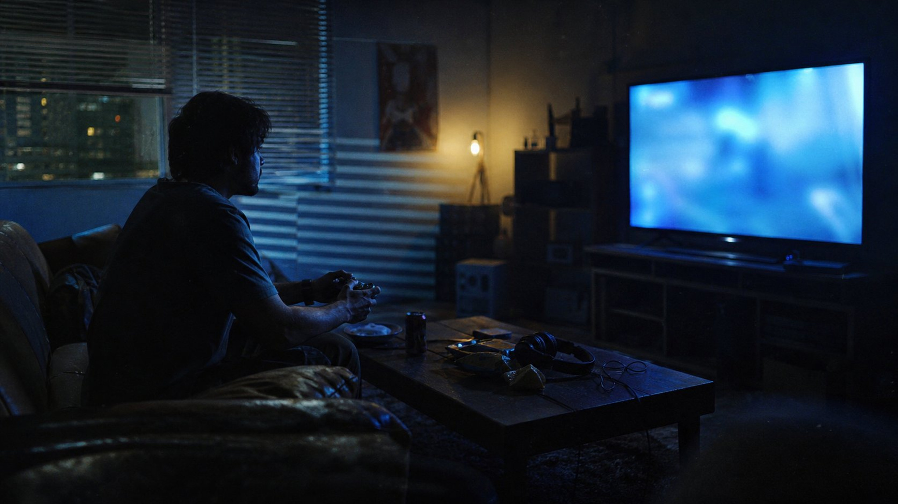
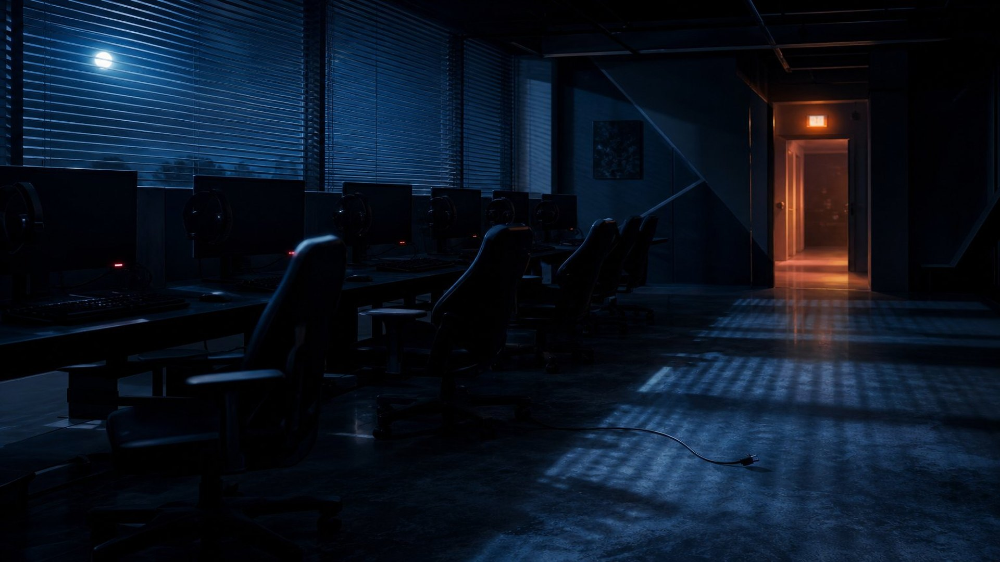
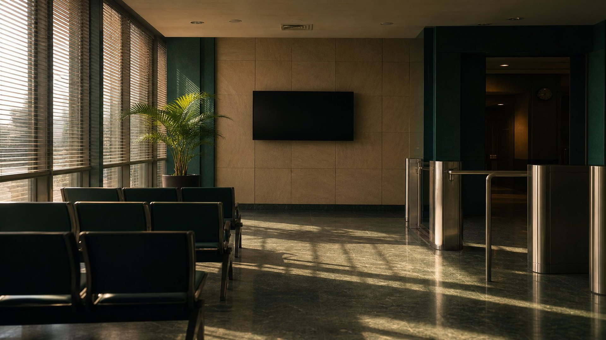
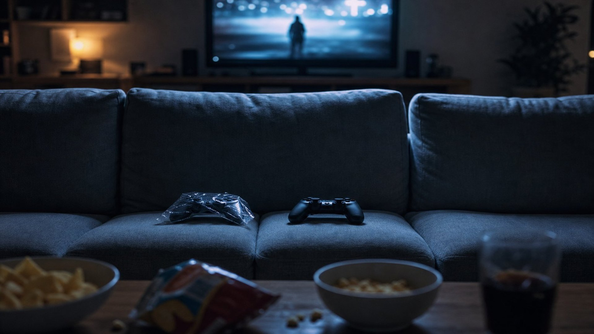
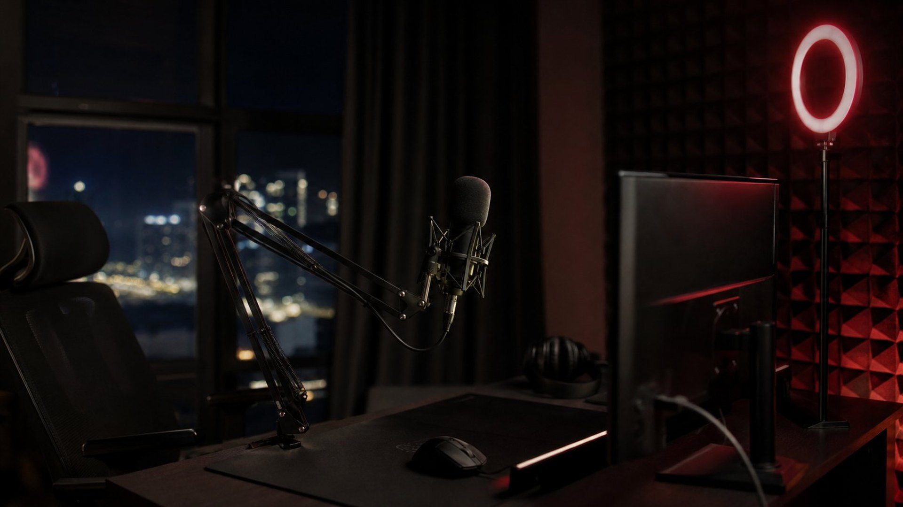
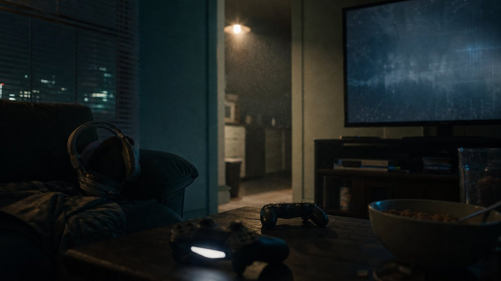

S4 · G5 · Multijoueur
Online : ce qui est annoncé
GTA VI sort le 19 novembre comme jeu strictement solo. Aucun mode en ligne, aucune coopération n'a été annoncé — ni au lancement, ni après. Voici ce qui est confirmé, ce qui est attendu, et ce qui n'est qu'une rumeur nommée comme telle.
Le 19 novembre, ce sera du solo
Ce n'est pas une lecture de trailer ni une déduction : Rockstar et Take-Two l'écrivent noir sur blanc, et la fiche PlayStation le répète.
ONL-11
Confirmé
- Sortie solo le 19/11/2026.
ONL-11 - PS5 et Xbox Series X|S.
- GTA Online actuel maintenu.
ONL-13
Attendu, non confirmé
- Un mode en ligne séparé, après le lancement.
ONL-12 - Une fenêtre décembre 2026 / début 2027.
ONL-16
Jamais annoncé
- Nom officiel du mode en ligne.
- Transfert de progression, d'argent ou d'achats.
ONL-17 - Cross-play et cross-progression.
ONL-17

Le GTA Online actuel continue
Point rassurant pour les joueurs déjà investis : rien ne s'arrête le 19 novembre.
ONL-13Take-Two a confirmé que Rockstar continuera d'alimenter GTA Online en contenu et en événements après la sortie de GTA VI.ONL-13Aucune fermeture n'est annoncée sur les consoles actuelles : compte, entreprises et argent restent en place.ONL-15Les précommandes numériques éligibles offrent un mois de GTA+, qui se renouvelle ensuite au tarif normal sauf résiliation. Cet abonnement ne donne accès à aucun mode multijoueur de GTA VI.ONL-14Le préchargement a ouvert le 10/11/2026. Rockstar confirme aussi l'accès via Xbox Cloud Gaming et le Remote Play : ce sont des fonctions de diffusion, pas du multijoueur.
Solo à l'ouverture : ce que ça change concrètement
Ce n'est pas une nuance de communication, c'est une contrainte de jeu : le 19 novembre, GTA VI est une expérience strictement solo. Voici ce que cela implique, sans spéculation.
| Question | Réponse au lancement | Statut |
|---|---|---|
| Multijoueur | Aucun mode en ligne, aucun co-op | OFFICIEL |
| Abonnement requis | Aucun pour la campagne | OFFICIEL |
| Crossplay | Sans objet tant qu'il n'y a pas de multijoueur | OFFICIEL |
| Nom du futur online | Aucun nom annoncé | EN ATTENTE |
| Date du futur online | Aucune date officielle ; 2027 relève de la spéculation | ESTIMATION |
Le GTA Online de GTA V continue de tourner et de recevoir ses mises à jour hebdomadaires : rien ne s'arrête le 19 novembre, et vos personnages, véhicules et propriétés y restent. C'est aussi le seul endroit où le mois de GTA+ offert avec les précommandes a une utilité immédiate. ONL-21




Ce qui restera à vérifier après la sortie
Inconnues au 18/11/2026
- Nom, date et contenu d'un éventuel mode en ligne.
- Modèle économique et éventuelle monnaie premium.
- Cross-play entre PS5 et Xbox, et cross-progression.
- Reprise ou non des acquis de GTA Online.
- Outils de roleplay ou serveurs privés.
EN ATTENTE · 19/11 Aucune de ces réponses n'existe au moment de la publication.
